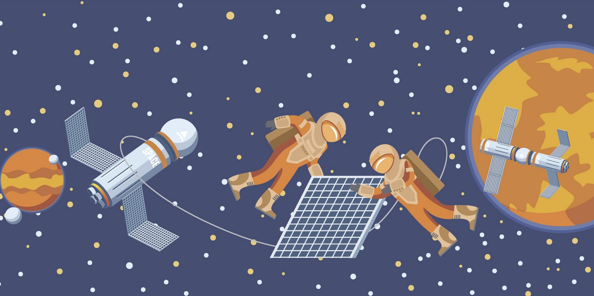

DISCOVER SECTION
The universe is a pretty big place and countless mind-bending phenomena happens there every day. There are tones of exciting new discoveries in space captured whether is the first black hole, the sun's atmosphere, or the far side of the moon, this website hopes to find them all and introduce it to the people.